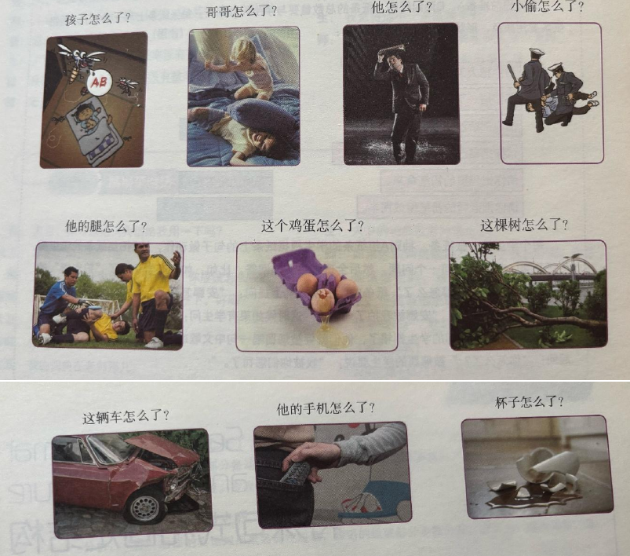

Goldsmiths - Mandarin Chinese Intermediate 2 Summer Course
30th April 2026
Lesson 1
词汇
| 中文 | 拼音 | 英语 | 词类 | 词语短语 | 句子 | 笔记 |
|---|---|---|---|---|---|---|
| 寄 | jì | send | verb | 寄包裹 , 寄快递 | 我要去邮局寄一个包裹。 | |
| 错 | cuò | wrong, erroneous | adjective | 做错 , 记错 , 听错 , 写错 , 说错 | 对不起，我记错时间了。 | |
| 包裹 | bāoguǒ | parcel, package | noun | 寄包裹 , 一个包裹 , 寄这个包裹 | 这个包裹是谁的？ | |
| 些 | xiē | some | measure word | 一些 , 这些 , 那些 | 这些旧书你还要吗？ | |
| 英文 | Yīngwén | English | noun | 英文书 , 那些英文课本 | 他经常看英文报纸。 | |
| 词典 | cídiǎn | dictionary | noun | 英文词典 , 一本大词典 , 查词典 | 你可以帮我查一下词典吗？ | |
| 旧 | jiù | old, used | adjective | 旧词典 , 旧书 , 旧衣服 | 这件衣服太旧了，我不穿了。 | |
| 包 | bāo | to wrap | verb | 包书 , 包礼物 , 包饺子 | 我们今天晚上一起包饺子吧。 | |
| 邮局 | yóujú | post office | noun | 去邮局 , 邮局在哪儿 | 请问这附近有邮局吗？ | |
| 猜 | cāi | guess | verb | 猜一猜 , 猜对了 , 你猜 | 你猜猜看这里面是什么包裹？ |
作业
一、给下面的词语写出拼音 ＋ 声调，然后组词 Yī, gěi xiàmiàn de cíyǔ xiě chū pīnyīn + shēngdiào, ránhòu zǔcí. 1,Write the pinyin and tones for the following words, and then form them into words
| 中文 | 拼音 | 英语 |
|---|---|---|
| 邮局 | yóujú | post office |
| 包裹 | bāoguǒ | parcel |
| 词典 | cídiǎn | dictionary |
| 英文 | Yīngwén | English |
| 旧 | jiù | old |
| 奇 | jì | send (parcel) |
| 包 | bāo | wrap it |
| 错 | cuò | wrong, mistake |
二、用结果补语填空，并把句子改成“把”字句。 Èr, yòng jiéguǒ bǔyǔ tiánkòng, bìng bǎ jùzi gǎichéng "bǎ" zì jù. 2, Fill in the blanks with the resultative complement and change them to the "把" sentence.
我包好包裹了。－》 我把包裹包好了。
我做完作业了。－》 我把作业做完了。
我写对汉字了。－》 我把汉字写对了。
我听懂汉语了。－》 我把汉语听懂了。
我写错名字了。－》 我把名字写错了。
三、用结果补语描述你今天做了什么。 Sān, yòng jiéguǒ bǔyǔ miáoshù nǐ jīntiān zuòle shénme. 3, Describe what you did today with resultative complement.
v1
今天我睡好了。
起床起得比较晚。
上午我在公园跑完步了。
然后中午我吃饱了。
下午在图书馆写完了作业。
v2
今天我睡好了。
起床起得比较晚。
上午我先在公园跑完步，然后回家把午饭吃饱了。
下午我去了图书馆，写完了汉语作业， 也复习好了上个星期的课文，还写对了一些汉字。
Lesson 2
词汇
| 中文 | 拼音 | 英语 | 词类 | 词语短语 | 句子 | 笔记 |
|---|---|---|---|---|---|---|
| 往 | wǎng | to, toward | preposition | 往美国 , 往西安 , 往欧洲寄 | 请问往右边走是地铁站吗？ | |
| 航空 | hángkōng | aviation | noun | 寄航空 , 航空公司 | 这家航空公司的服务很好。 | |
| 空 | kōng | sky, air | noun | 空中 , 天空 | 小鸟在蓝色的天空里飞。 | |
| 海运 | hǎiyùn | sea transportation, ocean shipping | noun | 寄海运 , 海运公司 | 因为东西太重，所以我们选海运。 | |
| 海 | hǎi | sea, big lake | noun | 海边 , 海上 , 海里 | 今年夏天我想去海边旅游。 | |
| 邮费 | yóufèi | postage | noun | 交邮费 , 多少邮费 | 请问寄这封信需要多少邮费？ | |
| 费 | fèi | fee, expense, charge | noun | 车费 , 学费 , 水电费 | 大学毕业后我就不用交学费了。 | |
| 流利 | liúlì | fluent | adjective | 说得流利 , 普通话流利 | 她的汉语说得非常流利。 | |
| 运费 | yùnfèi | freight, cargo fee | noun | 免运费 , 算运费 | 买满两百块钱可以免运费吗？ | |
| 草莓 | cǎoméi | strawberries | noun | 吃草莓 , 新鲜草莓 | 我今天在超市买了很多甜草莓。 | |
| 取 | qǔ | to take, to get, to fetch | verb | 取钱 , 取包裹 , 取照片 , 取东西 | 我下午要去邮局取我的包裹。 | |
| 通知单 | tōngzhīdān | letter of notice | noun | 包裹通知单 , 取通知单 | 你带包裹通知单了吗？ | |
| 通知 | tōngzhī | to notify, to inform; notification | verb, noun | 通知你 , 写通知 | 经理通知我们明天早上开会。 | |
| 单 | dān | sheet, list | noun | 收费单 , 床单 , 菜单 | 服务员，请给我们看一下菜单。 | |
| 海关 | hǎiguān | customhouse, customs | noun | 去海关 , 海关工作人员 | 过海关的时候需要检查行李。 | |
| 别 | bié | don't | adverb | 别忘了 , 别迟到 , 别写错了 | 去外面的时候别忘了带伞。 | |
| 护照 | hùzhào | passport | noun | 带护照 , 办护照 , 取护照 | 出国以前一定要检查你的护照。 | |
| 客气 | kèqi | polite, courteous | adjective | 不客气 , 不要客气 , 别客气 , 太客气 | 大家都是朋友，不用这么客气。 | |
| 建国门 | jiànguó mén | Jianguomen (place in Beijing) | proper noun | 去建国门 , 到建国门 | 你可以坐地铁一号线去建国门。 | |
| 门 | mén | door, gate, entrance | noun | 开门 , 关门 , 门口 , 大门 | 请帮我把办公室的门关上。 |
作业
一、自己读一遍课文
马大为： 您好，我要寄这个包裹。
工作人员： 好，我看一下。
马大为： 这些书都是新的。 这四本书是中文的，那两本书是英文得。 这本大词典是旧的…
工作人员： 好了，请包好。
马大为： 对不起，这是我刚学的课文，我想练习练习。
工作人员： 您汉语说得很流利。 您要往哪儿寄？
马大为： 伦敦。
工作人员： 您寄航空还是海运？
马大为： 寄航空比海运贵，可是比海运快多了。 寄航空吧。
工作人员： 邮费是 一百零六 块。 请在这儿写上您的名字。
马大为： 好的，我还要取一个包裹。
工作人员： 请把包裹通知单给我。 对不起，您的包裹不在我们邮局取， 您得去海关取。
马大为： 请问，海关在哪儿？
工作人员： 在建国门。 别忘了把您的护照带去。
马大为： 谢谢。
工作人员： 不客气。
二、给下面的词语写出拼音 ＋ 声调，然后组词 Ér, gěi xiàmiàn de cíyǔ xiě chū pīnyīn + shēngdiào, ránhòu zǔcí. 2,Write the pinyin and tones for the following words, and then form them into words
| 中文 | 拼音 | 词 |
|---|---|---|
| 往 | wǎng | |
| 航空 | hángkōng | |
| 空 | kōng | |
| 海运 | hǎiyùn | |
| 海 | hǎi | |
| 邮费 | yóufèi | |
| 费 | fèi | |
| 取 | qǔ | |
| 通知单 | tōngzhīdān | |
| 通知 | tōngzhī | |
| 单 | dān | |
| 海关 | hǎiguān | |
| 别 | bié | |
| 护照 | hùzhào | |
| 客气 | kèqī | |
| 建国门 | Jiànguó mén | |
| 门 | mén |
三、用所给的单词和短语造句。 Sān, Yòng suǒ gěi de dāncí hé duǎnyǔ zàojù. 3, Make sentences with the words and phrases given.
1 .
多，寄，了，比，航空，慢，海运，寄
海运寄比航空寄慢多了。
2 .
包裹，取，建国门，在
在建国门取包裹。
包裹在建国门取。
3 .
钱，下，到，我，取，星期，要，银行
下星期我要到银行取钱。
4 .
今天，带，把，护照，我，了，来
今天我把护照带来了。
5 .
左，往，请，走，去，图书馆
去图书馆，请往左走。
Lesson 3
词汇
| 中文 | 拼音 | 英语 | 词类 | 词语短语 | 句子 | 笔记 |
|---|---|---|---|---|---|---|
| 东边 | dōngbiān | the east side | noun | 东边的商场 , 学校东边 , 在银行东边 | 学校的东边有一个很大的体育馆。 | Can be used with or without "的" depending on the noun modifying it. |
| 东 | dōng | east | noun | 往东走 , 东大门 , 坐路车向东 | 你一直往东走，就能看到那个地铁站。 | Often paired with "往" (wǎng) or "向" (xiàng) to show direction. |
| 离 | lí | away, off, from | preposition | 离学校 , 离这儿 , 离那儿 | 我住的地方离大学有一点儿远。 | Used in the structure: "A 离 B + Distance/Adjective". |
| 远 | yuǎn | far | adjective | 不远 , 很远 , 非常远 , 太远 , 离学院不太远 | 超市离火车站不远，走几分钟就到了。 | Frequently negated as "不远" or modified by intensifiers like "很". |
| 车站 | chēzhàn | bus stop, station | noun | 去车站 , 在车站等车 , 公交车站 | 前边那个车站有很多去市中心的公共汽车。 | General term for bus stops, train stations, or subway stations. |
| 前边 | qiánbiān | front side | noun | 前边的公园 , 前边的人 , 花园小区前边 , 在宿舍前边 | 请问，办公楼是不是在图书馆的前边？ | Interchangeable with "前面" (qiánmiàn) in most spoken contexts. |
| 前 | qián | front, forward | noun | 往前走 , 向前看 , 前排 | 请大家一直往前走，不要在门口停下来。 | Commonly acts as a directional target for movement verbs. |
| 拐 | guǎi | to turn | verb | 往右拐 , 往左拐 , 往东拐 , 先往右拐 | 在第一个十字路口往左拐\，就到美术系了。 | "拐" is more colloquial; "转" (zhuǎn) is slightly more formal. |
| 中文 | 拼音 | 英语 | 词类 | 句子 | 笔记 |
|---|---|---|---|---|---|
| 医院 | yīyuàn | hospital | noun | 医院就在银行的对面，很好找。 | |
| 警察局 | jǐngchájú | police station | noun | 往前走，警察局在那个商店的左边。 | Can also be called 公安局 in Mainland China. |
| 商店 | shāngdiàn | shop | noun | 学校里边有一个小商店。 | |
| 学校 | xuéxiào | school | noun | 我家的后面就是学校，所以很方便。 | General term for any educational institution. |
| 银行 | yínháng | bank | noun | 请问，这儿附近有银行吗？ | |
| 法院 | fǎyuàn | court | noun | 法院离这栋办公楼非常远。 | |
| 酒店 | jiǔdiàn | hotel | noun | 那个火车站的右边有一家大酒店。 | In northern China, it can also mean a restaurant, but usually means hotel. |
| 食堂 | shítáng | canteen; mess hall | noun | 教学楼的西边就是学生食堂。 | Refers specifically to institutional cafeterias. |
| 宿舍 | sùshè | dormitory; hostel | noun | 我的宿舍离留学生食堂不远。 | |
| 教学楼 | jiàoxuélóu | teaching building | noun | 图书馆在教学楼和办公楼的中间。 | |
| 书店 | shūdiàn | bookstore | noun | 出了学校大门往右拐，有一个书店。 |
| 中文 | 拼音 | 英语 | 词类 | 句子 | 笔记 |
|---|---|---|---|---|---|
| 狮子 | shīzi | lion | noun | 动物园的北边有三只大狮子。 | Measure word 只 . |
| 猫头鹰 | māotóuyīng | owl | noun | 那只猫头鹰正停在教学楼后面的大树上。 | Literally translates as "cat-headed eagle". |
| 鹅 | é | goose | noun | 图书馆前边的湖里有两只白鹅。 | Measure word 只 . |
| 熊猫 | xióngmāo | panda | noun | 大熊猫的办公室在动物园的最里边。 | Commonly referred to as 大熊猫 . |
| 长颈鹿 | chángjǐnglù | giraffe | noun | 大象馆的左边就是长颈鹿的地方。 | Literally translates as "long-necked deer". |
| 猫 | māo | cat | noun | 我的猫喜欢躺在沙发和茶几的中间。 | Measure word 只 . |
| 鹿 | lù | deer | noun | 看，前边那座山的右边有几只鹿！ | |
| 大象 | dàxiàng | elephant | noun | 那头大象正往宿舍楼的方向走过来。 | Measure word 头 which is reserved for large livestock/animals. |
| 兔子 | tùzi | rabbit | noun | 商店门前的那只小兔子真可爱。 | Measure word 只 . |
| 中文 | 拼音 | 英语 | 词类 | 句子 |
|---|---|---|---|---|
| 苹果 | píngguǒ | apple | noun | 我每天吃一个苹果。 |
| 香蕉 | xiāngjiāo | banana | noun | 猴子最喜欢吃香蕉。 |
| 柠檬 | níngméng | lemon | noun | 这个柠檬太酸了！ |
| 西瓜 | xīguā | watermelon | noun | 夏天吃西瓜很舒服。 |
| 草莓 | cǎoméi | strawberries | noun | 妹妹买了很多红草莓。 |
| 桃子 | táozǐ | peach | noun | 树上长满了新鲜的桃子。 |
| 菠萝 | bōluó | pineapple | noun | 你以前吃过这种菠萝吗？ |
| 橙子 | chéngzǐ | orange | noun | 橙子含有丰富的维生素。 |
| 芒果 | mángguǒ | mango | noun | 请帮我把这个芒果切开。 |
作业
把句子改成“是……的”结构，来强调括号里的内容。 Bǎ jùzi gǎichéng “shì…de” jiégòu, lái qiángdiào kuòhào lǐ de nèiróng. Change the sentences into the "是 … … 的" structure to emphasize the information in brackets.
我坐公共汽车去学校。 (emphasize how / 方式) Wǒ zuò gōnggòng qìchē qù xuéxiào.
我是坐公共汽车去学校的。 Wǒ shì zuò gōnggòng qìchē qù xuéxiào de.
我们昨天看房子。 (emphasize how / 时间) Wǒmen zuótiān kàn fángzi.
我们是昨天看房子的。 Wǒmen shì zuótiān kàn fángzi de.
他们在花园小区住。 (emphasize how / 地点) Tāmen zài huāyuán xiǎoqū zhù.
他们是在花园小区住的。 Tāmen shì zài huāyuán xiǎoqū zhù de.
我从英国来。 (emphasize how / 来源) Wǒ cóng Yīngguó lái.
我是从英国来的。 Wǒ shì cóng Yīngguó lái de.
他去年来中国。 (emphasize how / 时间) Tā qùnián lái Zhōngguó.
他是去年来中国的。 Tā shì qùnián lái Zhōngguó de.
用“是…… 的”句回答问题，每句必须完整。
Yòng “shì…… de” jù huídá wèntí, měi jù bìxū wánzhěng.
Answer the questions using the “是……的” structure.
Each sentence must be complete.
你是怎么去学校的？ Nǐ shì zěnme qù xuéxiào de?
我是骑自行车去学校的。 Wǒ shì qí zìxíngchē qù xuéxiào de.
你是什么时候开始学中文的？ Nǐ shì shénme shíhou kāishǐ xué Zhōngwén de?
我是三年前开始学中文的。 Wǒ shì sān nián qián kāishǐ xué Zhōngwén de.
你是在哪儿认识你朋友的？ Nǐ shì zài nǎ'er rènshi nǐ péngyǒu de?
我是在咖啡馆认识他的。 Wǒ shì zài kāfēiguǎn rènshi wǒ péngyǒu de.
你上次寄包裹是在哪儿寄的？ Nǐ shàng cì jì bāoguǒ shì zài nǎ'er jì de?
我上次是在上海寄包裹的。 Wǒ shàng cì jì bāoguǒ shì zài Shànghǎi jì de.
顶力波和王小云是怎么去大为家的？ Dǐng Lìbō hé Wáng Xiǎoyún shì zěnme qù Dàwéi jiā de?
他们是坐地铁去大为家的。 Tāmen shì zuò dìtiě qù Dàwéi jiā de.
Lesson 4
词汇
| 中文 | 拼音 | 英语 | 词类 | 句子 | 词语短语 | 笔记 |
|---|---|---|---|---|---|---|
| 下边 | xiàbiān | below, under | noun | 我把拖鞋放在床下边了。 | 楼下边 , 床下边 , 在书下边 , 下边的笔 | Often used interchangeably with 下面. |
| 下 | xià | below, down; to go down | noun, verb | 请问坐电梯是往上还是往下？ | 往下走 , 下楼 , 下大雨 | Acts as a verb in "下楼" or "下雨". |
| 上边 | shàngbiān | above, on top of | noun | 桌子上边放着一本新报纸。 | 上边的衣服 , 上边的报纸 , 在桌子上边 | More casual than 上面. |
| 上 | shàng | upper, up; to go up | noun, verb | 我们走楼梯往上走吧。 | 往上走 , 上楼 , 上班 | Acts as a verb in "上楼" or "上班". |
| 平方米 | píngfāngmǐ | square meter | measure word | 这套新房子的客厅有三十平方米。 | 56平方米 , 多少平方米 | Formal standard unit for area. |
| 平方 | píngfāng | square; square meter | noun, measure word | 我的卧室有十几个平方。 | 有十几个平方 , 平方根 | Common casual abbreviation for area. |
| 平米 | píngmǐ | square meter | measure word | 这套两居室一共有五十六平米。 | 56平米 , 多少平米 | Highly common spoken shorthand. |
| 卫生间 | wèishēngjiān | washroom, restroom, bathroom | noun | 这套主卧室里带 under 一个卫生间。 | 一个卫生间 , 公用卫生间 | Literally "hygiene room". |
| 卫生 | wèishēng | hygiene, sanitation; hygienic | noun, adjective | 厨房和卫生间一定要注意卫生。 | 公共卫生 , 讲卫生 | Can mean clean/hygienic as an adj. |
| 客厅 | kètīng | living room | noun | 我们家客厅北边是一间小卧室。 | 一个客厅 , 一间客厅 , 一间大客厅 | "间" or "个" are acceptable classifiers. |
| 北边 | běibiān | the north side, north | noun | 卫生间北边是一家大医院。 | 北边的房子 , 卫生间北边 , 客厅北边 | Relativized position word. |
| 北 | běi | north | noun | 出了小区大门一直往北走就是地铁站。 | 往北走 , 往北拐 , 北京 | Core directional root. |
| 卧室 | wòshì | bedroom | noun | 这套房子有两个大卧室。 | 一个卧室 , 一间卧室 , 小卧室 | "间" highlights the room structure. |
| 卧 | wò | to lie down | verb | 医生让受伤的病人卧床休息。 | 卧铺 , 卧床 | Standard formal or bound morpheme. |
| 外边 | wàibiān | outside | noun | 阳台外边是一个漂亮的花园。 | 去外边玩儿 , 去外边看看 , 到外边走走 | Opposite of 里边. |
| 阳台 | yángtái | balcony | noun | 新房子的阳台很大，采光很好。 | 一个阳台 , 一个大阳台 | Literally "sun platform". |
| 花园小区 | huāyuán xiǎoqū | Garden Residential District | proper noun | 我阿姨家住在市中心的花园小区。 | 叫花园小区 , 住花园小区 | "小区" means housing estate/complex. |
| 花园 | huāyuán | garden | noun | 这个漂亮的花园里边有很多红花。 | 花园东边 , 花园里边 , 花园左边 , 一个漂亮的花园 | "座" or "个" used as measure words. |
| 区 | qū | district, area, region | noun | 这里的大学很多，所以叫学院区。 | 学院区 , 宿舍区 , 小区 | Denotes an administrative zone/spot. |
| 厨房 | chúfáng | kitchen | noun | 妈妈正在干净的厨房里做晚饭。 | 一个厨房 , 下厨房 | "下厨房" acts as a common idiom. |
| 套 | tào | set; measure word for suites or flats | noun, measure word | 你想买这套五十六平米的房子吗？ | 一套房子 , 一套西装 , 手套 | Native classifier for real estate. |
| 中文 | 拼音 | 英语 | 词类 | 句子 | 笔记 | |
|---|---|---|---|---|---|---|
| 系 | xì | department | noun | 我们系和外语系都在这栋楼的二楼。 | Refers specifically to academic departments. | |
| 文学系 | wénxuéxì | literature department | noun | 文学系在办公楼的后面，很安静。 | ||
| 外语系 | wàiyǔxì | foreign languages department | noun | 外语系的办公室在美术系的左边。 | ||
| 美术系 | měishùxì | art department | noun | 美术系的大楼就在图书馆的对面。 | ||
| 办公楼 | bàngōnglóu | office building | noun | 进了学校大门，办公楼就在你的右边。 |
作业
一、 请读一遍没有拼音的课文 Yī, qǐng dú yībiàn méiyǒu pīnyīn de kèwén 1, Please read the text without pinyin once
陆雨平： 你们去看大为祖的房子了没有？ 房子在哪儿？ Lù Yǔpíng: Nǐmen qù kàn Dàwéi zhù de fángzi le méiyǒu? Fángzi zài nǎr?
王小云： 去了，房子在学校东边，离学校不太远。 那儿叫花园小区，大为住八号楼。 Wáng Xiǎoyún: Qù le, fángzi zài xuéxiào dōngbian, lí xuéxiào bútài yuǎn. Nàr jiào Huāyuán Xiǎoqū, Dàwéi zhù bā hào lóu.
陆雨平： 你们是怎么去的？ Lù Yǔpíng: Nǐmen shì zěnme qù de?
丁力波：
我们是坐公共汽车的。车站就在小区前边。
下车以后先往右拐，再往前走三分钟，就到八号楼了。
Dīng Lìbō: Wǒmen shì zuò gōnggòng qìchē de.
Chēzhàn jiù zài xiǎoqū qiánbian.
Xiàchē yǐhòu xiān wǎng yòu guǎi,
zài wǎng qián zǒu sān fēnzhōng,
jiù dào bā hào lóu le.
陆雨平： 那儿怎么样？ Lù Yǔpíng: Nàr zěnmeyàng?
丁力波：
很好。八号楼下边是一个小花园，
左边有一个商店，商店旁边是书店。
右边是银行和邮局。
大为的房子在八号楼九层，上边还有六层。
Dīng Lìbō: Hěn hǎo. Bā hào lóu xiàbiān shì yīgè xiǎo huāyuán,
zuǒbiān yǒu yīgè shāngdiàn, shāngdiàn pángbiān shì shūdiàn.
Yòubiān shì yínháng hé yóujú.
Dàwéi de fángzi zài bā hào lóu jiǔ céng,
shàngbiān hái yǒu liù céng.
陆雨平： 房子不大吧？ Lù Yǔpíng: Fángzi bù dà ba?
王小云： 那套房子一共有五十六平方米。 Wáng Xiǎoyún: Nà tào fángzi yīgòng yǒu wǔshíliù píngfāng mǐ.
丁力波： 进门以后，左边是卫生间，右边是客厅。 Dīng Lìbō: Jìnmén yǐhòu, zuǒbiān shì wèishēngjiān, yòubiān shì kètīng.
陆雨平： 厨房在哪儿？ Lù Yǔpíng: Chúfáng zài nǎ'er?
王小云： 厨房在客厅北边，卧室在客厅东边。 卧室外边有一个大阳台。 Wáng Xiǎoyún: Chúfáng zài kètīng běibiān, wòshì zài kètīng dōngbiān. Wòshì wàibiān yǒu yīgè dà yángtái.
丁力波： 你问了很多问题，你要写一篇文章 介绍马大为祖的房子吗？ Dīng Lìbō: Nǐ wènle hěnduō wèntí, nǐ yào xiě yī piān wénzhāng jièshào Mǎ Dàwéi zū de fángzi ma?
陆雨平： 问问题是记者的职业习惯啊。 Lù Yǔpíng: Wèn wèntí shì jìzhě de zhíyè xíguàn a.
二、 继续复习新学的词 Èr, jìxù fùxí xīnxué de cí 2, Continue to review the newly learned vocabulary
| 东边 | dōngbiān | east side |
| 离 | lí | distance |
| 远 | yuǎn | far |
| 车站 | chēzhàn | bus stop |
| 前边 | qiánbiān | front side |
| 拐 | guǎi | turn to |
| 错 | cuò | wrong |
| jì | 寄 | send |
| 包裹 | bāoguǒ | parcel |
| 英文 | yīngwén | english |
| xiē | 些 | some |
| 词典 | cídiǎn | dictionary |
| 旧 | jiù | old |
| bāo | 包 | wrap |
| 听董 | tīngdōng | understand hearing |
| these | 这些 | zhēxiē |
| those | 那些 | náxiē |
| some | 一些 | yīxiē |
| 往 | wǎng | toward |
| 航空 | hángkōng | air mail |
| 海运 | hǎiyùn | sea mail |
| 邮局 | yóujú | post office |
| qǔ | 取 | pick up |
| 通知单 | tōngzhīdān | mail notice |
| 海关 | hǎiguān | customs |
| bié | 别 | don't |
| 护照 | húzhào | passport |
| 客气 | kéqì | polite |
| mén | 门 | door, gate |
写一个“把”字句
我把手机放在桌子上了。
写一个“比”字句。
我以为学跳舞比学汉语容易，但是跳舞难多了。
三、 看图说话 Sān, kàn tú shuōhuà 3, Describe the following pictures

客厅在厨房 北边（东北边），
卫生间在客厅 西南边（左边），
房子里有两个 卧室，
大卧室在（客厅下边）厨房和卫生间右边（对面），
小卧室在 客厅左边，
房子（大卧室）还有一个阳台。

我们学校不太大，一共有四个系。
汉语系在外语系北边（上边），
文学系在美术系东边（左边）。
办公楼东边（左边）有一个图书馆。
宿舍楼西边（右边）还有一个小商店和医院。
Lesson 5
主题
第三棵：司机开着车送我们到医院 Dì sān kē: Sījī kāizhe chē sòng wǒmen dào yīyuàn.
词汇
| 中文 | 拼音 | 英语 | 词类 | 词语短语 | 句子 | 笔记 |
|---|---|---|---|---|---|---|
| 被 | bèi | by (passive voice); quilt | preposition, noun | 被问 , 被打 , 被撞伤 | 他过马路的时候被车撞伤了。 | Passive marker. The agent (vehicle/person) follows "被". |
| 撞 | zhuàng | to bump against, to knock down | verb | 被车撞 , 撞车 , 撞人 | 那辆自行车把行人撞倒了。 | An active verb commonly coupled with result complements. |
| 伤 | shāng | to hurt, to wound; injury | verb, noun | 被撞伤 , 撞伤人 | 别担心，他伤得不重。 | Can function as a verb, noun, or a result complement. |
| 第 | dì | prefix for ordinal numbers | prefix | 第二十五课 , 第一 , 第三医院 | 他被送到了第三医院检查身体。 | Place a hyphen or space in Pinyin following ordinal numbers. |
| 检查 | jiǎnchá | to examine, to check | verb | 检查身体 , 检查电脑 , 检查汽车 | 医生正在为受伤的人检查身体。 | A verb-object compound when tracking "body" or "objects". |
| 重 | zhòng | serious, heavy | adjective | 伤得很重 , 伤得不重 , 衣服很重 , 工作不重 | 这包衣服很重，你拿不动。 | Pronounced "chóng" when meaning "to repeat". |
作业
一、把下列句子改成“被”字句。 Yī, Bǎ xiàliè jùzǐ gǎi chéng “bèi” zìjù. 1, Change the following sentences into ones with "被"
弟弟拿走了我的照相机。
我的照相机被弟弟拿走了。
爸爸开走了舅舅的汽车。
舅舅的汽车被爸爸开走了。
他把球踢进去了。
球被他踢进去了。
汽车撞伤了林娜。
林娜被汽车撞伤了。
二、用“被”看图说话 Èr, Yòng "bèi" kàn tú shuōhuà 2, Describe the following pictures with "被"

孩子怎么了？
孩子被蚊子咬了。 Háizi bèi wénzi yǎo le.
哥哥怎么了？
哥哥被弟弟打败了。 Gēge bèi dìdi dǎbài le.
哥哥被弟弟撞了。 Gēge bèi dìdi zhuàngle.
他怎么了？
他被雨淋了。 Tā bèi yǔ lín le.
小偷怎么了？
小偷被警察抓了。 Xiǎotōu bèi jǐngchá zhuā le.
他的腿怎么了？
他的腿被受重伤了。 Tā de tuǐ bèi shòu zhòng shāng le.
这个鸡蛋怎么了？
这个鸡蛋被打破了。 Zhè ge jīdàn bèi dǎpò le.
这棵树怎么了？
这棵树被大风刮倒了。 Zhè kē shù bèi dà fēng guā dǎo le.
这辆车怎么了？
这辆车被撞了。 Zhè liàng chē bèi zhuàng le.
他的手机怎么了？
他的手机被小偷偷了。 Tā de shǒujī bèi xiǎotōu tōule.
杯子怎么了？
杯子被打破了。 Bēizi bèi dǎpò le.
Lesson 6
主题
第六棵：练习使用“被”字句。 Dì liù kè: Liànxí shǐyòng “bèi” zì jù.
词汇
| 中文 | 拼音 | 英语 | 词类 | 词语短语 | 句子 | 笔记 |
|---|---|---|---|---|---|---|
| 借 | jiè | to borrow, to lend | verb | 借钱 , 借给 | 我可以借你的书吗? | Context decides "borrow" or "lend". |
| 拿 | ná | to hold, to take | verb | 拿走 , 拿手 | 请你拿这杯水给我。 | "拿手" is an adjective meaning "expert/specialty". |
| 踢 | tī | to kick, to play (soccer) | verb | 踢开 , 踢球 | 他踢足球踢得很好。 | Verb is repeated before the "得" structure. |
| 撞 | zhuàng | to bump, to hit | verb | 撞伤 , 撞坏 | 他不小心撞坏了自行车。 | Use "撞伤" for people/animals, "撞坏" for objects. |
| 咬 | yǎo | to bite | verb | 咬哭 , 咬住 | 小狗把他咬哭了。 | "咬哭" uses "哭" as a resultative complement. |
| 打 | dǎ | to hit, to play (balls) | verb | 打破 , 打哭 | 那个小男孩把镜子打破了。 | "打破" is widely used metaphorically (e.g., break a record). |
| 淋 | lín | to pour, to drench | verb | 淋湿 , 淋雨 | 突然下雨，我的衣服被淋湿了。 | "淋湿" is the most common resultative pairing for rain. |
| 抓 | zhuā | to catch, to grab | verb | 抓住 , 抓紧 | 猫抓老鼠很快。 | "抓紧" can metaphorically mean "to hurry up". |
| 吹 | chuī | to blow, to boast | verb | 吹倒 , 吹牛 | 大风把外面的树吹倒了。 | "吹倒" uses the directional/resultative "倒". |
| 砍 | kǎn | to cut, to chop | verb | 砍倒 , 砍价 | 工人们正在砍倒那棵枯树。 | "砍价" is a highly common slang for haggling. |
| 偷 | tōu | to steal; secretly | verb, adverb | 偷东西 , 偷看 | 有人偷了我的钱包。 | |
| 摔 | shuāi | to fall, to throw down | verb | 摔碎 , 摔倒 | 他不小心把杯子摔碎了。 | "摔碎" implies the object broke into tiny pieces. |
| 倒 | dǎo | to fall, to collapse | verb, result complement | 倒下 , 倒塌 | 书倒在地地上。 | Also pronounced "dào" when meaning "to pour". |
| 坏 | huài | bad; broken | adjective, result complement | 撞坏 , 坏掉 | 我的手机被撞坏了。 | |
| 碎 | suì | broken, shattered | adjective, result complement | 打碎 , 摔碎 | 他不小心把盘子打碎了。 | Specifically describes items broken into small shards. |
| 哭 | kū | to cry | verb, result complement | 打哭 , 咬哭 | 妹妹被哥哥打哭了。 | |
| 破 | pò | broken, torn | adjective, result complement | 打破 , 破坏 | 我的衣服被树枝挂破了。 | Used for torn fabrics, paper, or punctured surfaces. |
| 伤 | shāng | to injure; injury | verb, noun | 撞伤 , 受伤 | 他在车祸中撞伤了腿。 | "受伤" functions as a separable verb-object compound. |
| 湿 | shī | wet, moist | adjective | 淋湿 , 弄湿 | 外面下大雨，我的鞋子全淋湿了。 | Frequently finishes with "了" to show a change of state. |
| 断 | duàn | broken, snapped | adjective, result complement | 撞断 , 咬断 | 那只狗把绳子咬断了。 | Used for elongated objects (ropes, bones, branches). |